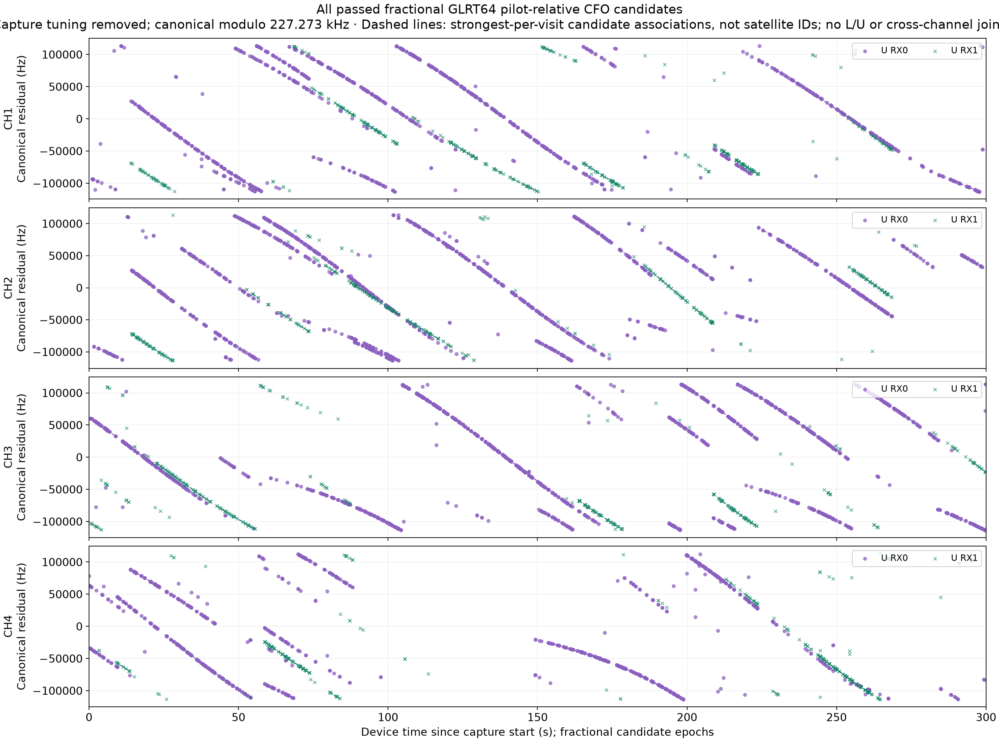
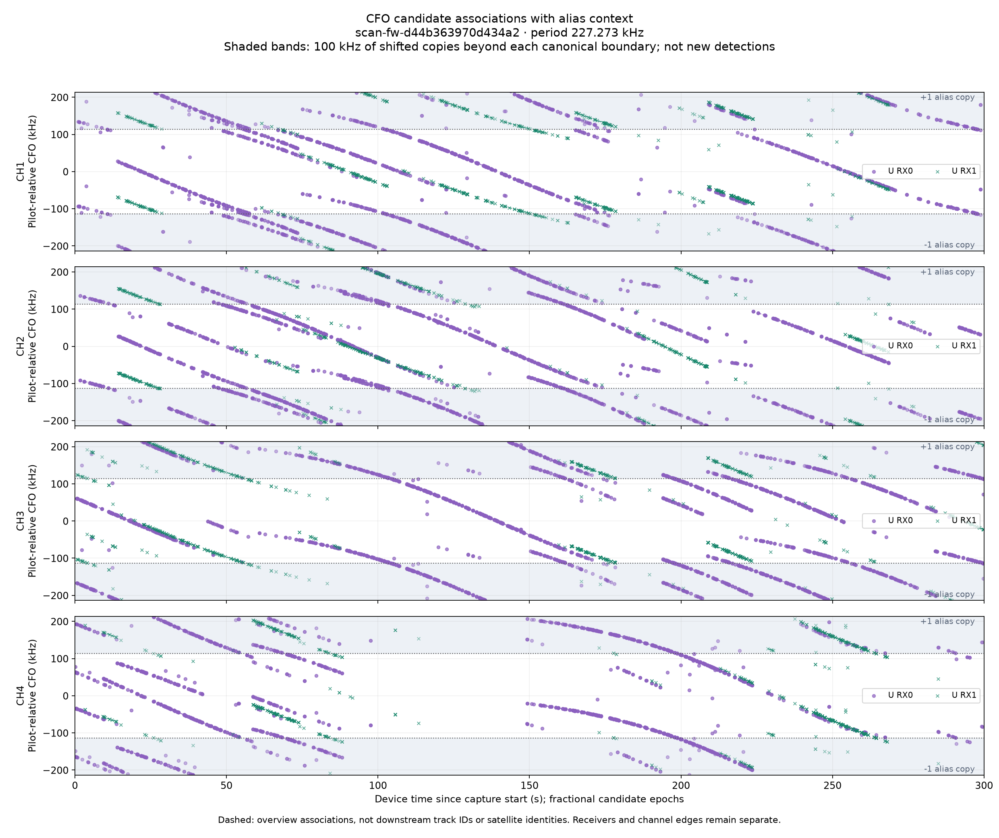
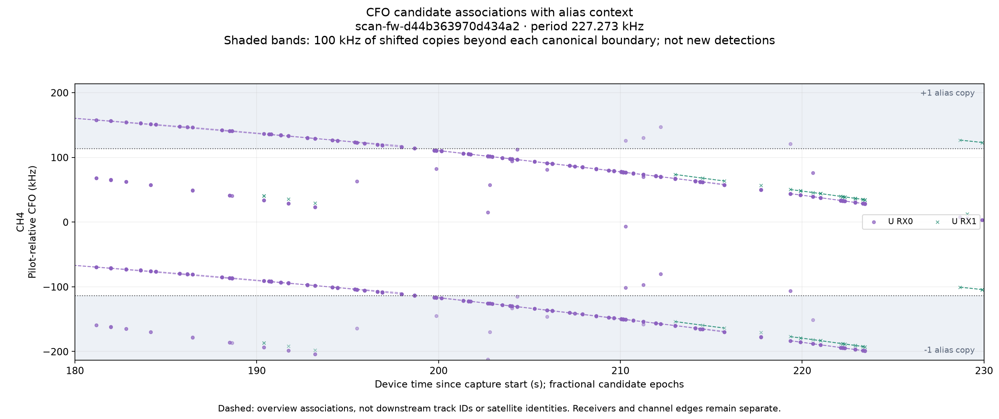

scan-fw-d44b363970d434a2
The alias period is 227.273 kHz. The companion view adds 100 kHz above and below the canonical ±113.636 kHz interval. Shaded points are exact shifted copies of existing candidates, not additional detections or independent evidence. No IQ was re-analyzed.
The downstream Hough tracker uses modulo-alias residuals. The dashed lines in these overview PNGs use a separate polynomial fitter and are not downstream track IDs. Visual continuity supports a wrap hypothesis but does not establish satellite identity.



Source digests and saved tracking evidence · Canonical candidates